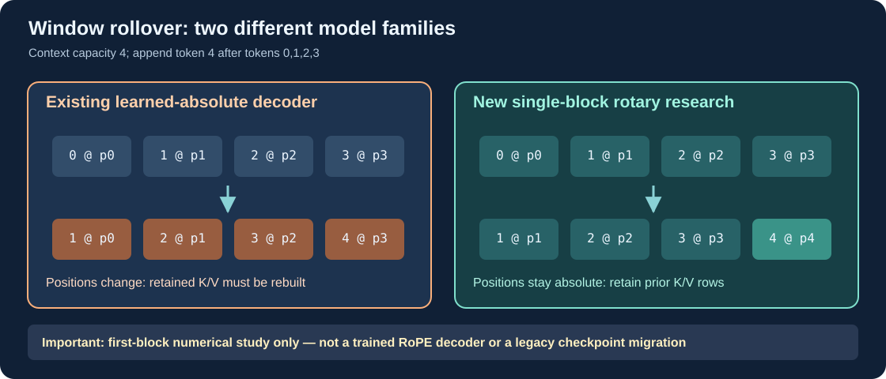

Learning objectives
Build and inspect a bounded native ring buffer that retains original rotary key/value rows across eviction; independently reproduce every attended output; account for the work avoided; and identify the precise boundary beyond which first-block reuse does not prove full-model correctness.
1. From position rotation to reusable attention state
Lesson 81 introduced a pure RoPE transform. A decoder, however, also requires a lifetime owner for cached keys and values. The new UmiAiTrainingRotaryWindow is an opaque Framework-owned object that stores key/value rows in a bounded circular buffer. Its caller supplies an already projected query, key and value for each token. Every successful append computes one causal attention output and retains the newest rows within the configured capacity.
The oldest entry is evicted when the buffer fills. The remaining keys are not shifted into different absolute positions; they retain the coordinates at which they were originally rotated. Their values are likewise retained. This avoids full-window K/V reconstruction for the explicitly qualified first-block experiment.

2. Keep attention mathematics explicit
For a new query, attention calculates one score per retained key using Q·K / sqrt(headChannels). Scores are normalised with softmax. A numerically stable implementation subtracts the largest score before evaluating exponentials, then forms the weighted sum of the retained values. Because the new query never reads future keys, the computation is causal.
Each insertion runs this calculation over at most 32 retained rows. The cache stores projected values for single-block attention; it does not store trainable model parameters, run backpropagation, or generate tokens on its own. The caller must be able to demonstrate that the supplied projections are stable when an earlier row is evicted.
3. Run the ring-cache study
#include "umicom/ai/training/rotary_window.h"
#include <stdio.h>
int main(void)
{
const UmiAiTrainingRotaryWindowConfig cfg = {
{4U, 4U, 10000.0}, 4U
};
UmiAiTrainingRotaryWindow *window = NULL;
UmiAiTrainingRotaryWindowStats report = {0};
float attended[4] = {0};
if (UmiAiTrainingRotaryWindowCreate(&cfg, &window)
!= UMI_STATUS_OK) return 1;
for (size_t token = 0U; token < 12U; ++token) {
/* Illustrative stable, already-projected first-block vectors. */
const float q[4] = {0.5F, 0.1F, 0.2F, 0.3F};
const float k[4] = {0.1F, (float)token * 0.02F, 0.4F, 0.0F};
const float v[4] = {(float)token, 0.5F, -0.2F, 1.0F};
if (UmiAiTrainingRotaryWindowAppend(window, q, k, v,
4U, attended, 4U)
!= UMI_STATUS_OK) return 2;
}
if (UmiAiTrainingRotaryWindowInspect(window, &report)
!= UMI_STATUS_OK) return 3;
printf("computed rows=%llu, evicted rows=%llu\n",
(unsigned long long)report.computedRows,
(unsigned long long)report.evictedRows);
UmiAiTrainingRotaryWindowDestroy(window);
return 0;
}The demonstration above inserts twelve synthetic, already-projected rows into a capacity-four window. At the end, computedRows is 12, evictedRows is 8, retainedRows is 4, and fullWindowRebuilds is 0. These are actual insertion counters for this mathematical component. They are not throughput measurements for an Umicom trained decoder.
4. Calculate the avoided projection rows
Compare the ring against a reference which recomputes every retained Q/K/V projection on each new token. For the first four insertions, the full reference would handle 1, then 2, 3 and 4 rows. The remaining eight insertions each contain a complete four-row window.
Full-window recomputation = 1 + 2 + 3 + 4 + (8 × 4) = 42 projection rows
Ring insertion work = 12 projection rows
Avoided projection rows = 42 − 12 = 30
Avoided share = 30 / 42 ≈ 71.43%This comparison counts projections, not attention score multiplications, peak memory, wall time or tokens per second. Each ring append still scores all currently retained keys. A smaller number of projection rows does not imply that overall latency is reduced by 71.43%.
5. The independent reference is essential
The rotary_window regression supplies deterministic vectors and independently reconstructs the entire retained attention window at every insertion. It re-rotates each original key from its absolute index, computes scores and normalisation anew, and compares the final attended context. The current regression covers context capacities of 1, 4, 8 and 16 over 18 successive positions each: 72 distinct attention comparisons, including many evictions.
The test also inspects the retained count, eviction count and absolute timeline after every append, and proves Reset clears that timeline. The separate rejection test confirms malformed input or insufficient output capacity cannot partially advance the ring or change the output buffer. These checks are in native C23 under tests/ai_training/.
6. Why this is not yet a trained rotary decoder
In the first block of a suitably designed model, Q/K/V may be projections of fixed token embeddings. After an old token is discarded, a surviving token's original first-block projection remains valid. But in an upper attention block, the surviving token's hidden state may already contain information from tokens outside the new window. Rebuilding an upper block from the truncated window can therefore differ from reusing its historical state. The new lab proves the bounded single-block case only.
Before a full Umicom RoPE decoder can enter the main Framework, it needs an independently identified architecture and checkpoint format, training and inference alignment, documented window semantics, multi-layer numerical qualifications, deterministic sampling, checkpoint-preservation tests and repeatable performance evidence. Existing learned-absolute checkpoints and the position-admission gate must remain unchanged.
7. Practical exercises
- Compute the number of projection rows recomputed for capacity eight and twelve successive insertions. Compare it against one projection per ring insertion.
- Explain why a ring slot number must never be substituted for an original absolute position in the rotary angle formula.
- Change the test to use context capacity one. What should happen to evictions and the attention output?
- Design a counterexample showing why retaining a second-block key after truncating its earlier context may change the meaning of a fresh-window recomputation.
Key lesson: an optimisation is qualified only for the exact model assumptions proved by independent mathematics and regression tests.